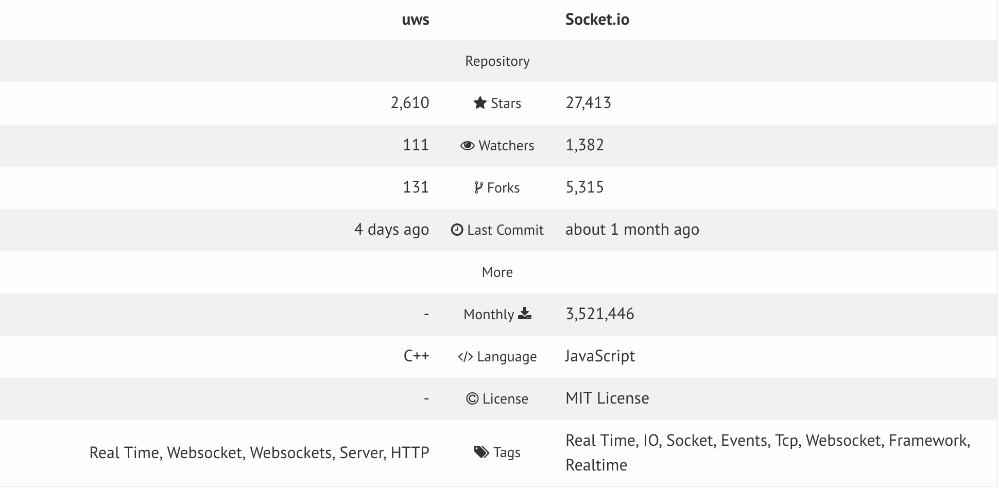
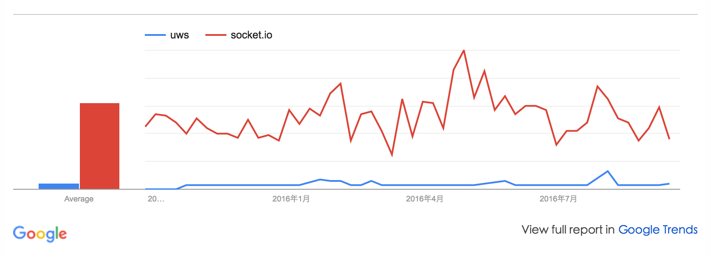

Socket.io,WebSocket,UwebSockets
三种socket框架简介
UwebSockets 简介
µWebSockets简称µWS，是一个超轻量级的、高效的、可扩展的WebSocket服务器实现，基于Node.js开发，主要特征是易于使用、完全异步的面向对象的接口，并且可以扩展到数百万的连接，与同类的产品相比，其内存占用只有竞品的几分之一，采用zlib/libpng许可证（非常宽松的许可证，适合商业应用）。
主要特性
+ 支持Linux、OSX、Windows
+ 内建了负载平衡和支持多核
+ 支持SSL/TLS安全访问，且可以与外部HTTPS服务器相集成
+ 内建Permessage-deflate（读取压缩消息）
+ Node.js绑定对外暴露WS接口
+ 可选择作为如Socket.IO、Primus或SocketCluster库的ws引擎
websocket 简介
WebSocket是html5规范新引入的功能，用于解决浏览器与后台服务器双向通讯的问题，使用WebSocket技术，后台可以随时向前端推送消息。
主要特性
+ 简单轮询
+ 长轮询
socket.io 简介
Socket.io是一个完全由JavaScript实现，基于Node.js、支持WebSocket的协议用于实时通信、跨平台的开源框架，它包括了客户端的JavaScript和服务器端的Node.js.
主要特性
+ 实时通信
+ 基于事件
+ 基于Node.js
+ 开源框架
+ 针对于webSockets的扩展
+ 二进制流
+ 没有互联网的依赖
Socket.io VS uWebSocket
uWebSocket较Socket.io来说生态圈还不是很完善,不是稳定版本。相对较优的方面在于它的轻量级,高度可扩展型框架。

下图显示过去一段时间这两种框架热度:

socket.io VS websocket 对比
WebSocket是HTML5的一种新通信协议，它实现了浏览器与服务器之间的双向通讯。而Socket.IO是一个完全由JavaScript实现、基于Node.js、支持WebSocket的协议用于实时通信、跨平台的开源框架，它包括了客户端的JavaScript和服务器端的Node.js。Socket.IO除了支持WebSocket通讯协议外，还支持许多种轮询（Polling）机制以及其它实时通信方式，并封装成了通用的接口，并且在服务端实现了这些实时机制的相应代码。Socket.IO实现的Polling通信机制包括Adobe Flash Socket、AJAX长轮询、AJAX multipart streaming、持久Iframe、JSONP轮询等。Socket.IO能够根据浏览器对通讯机制的支持情况自动地选择最佳的方式来实现网络实时应用。当前，Socket.IO最新版本是于2015年1月19日发布的1.3.0版本，该版本增强了稳定性和提高了性能，并修复了大量Bug。
Socket.IO已经具有众多强大功能的模块和扩展API，如（session.socket.io)（http session中间件，进行session相关操作）、socket.io-cookie（cookie解析中间件）、session-web-sockets（以安全的方式传递Session）、socket-logger（JSON格式的记录日志工具）、websocket.MQ（可靠的消息队列）、socket.io-mongo（使用MongoDB的适配器）、socket.io-redis（Redis的适配器）、socket.io-parser（服务端和客户端通讯的默认协议实现模块）等。
综述
在开发IO密集型应用的时候,完全可以以Socket.io为主体,将Socket.io的默认engine.io更换为uws,因为uws本身类库就支持socket.io扩展。
Use the new wsEngine: ‘uws’ option like so:
|
|
references